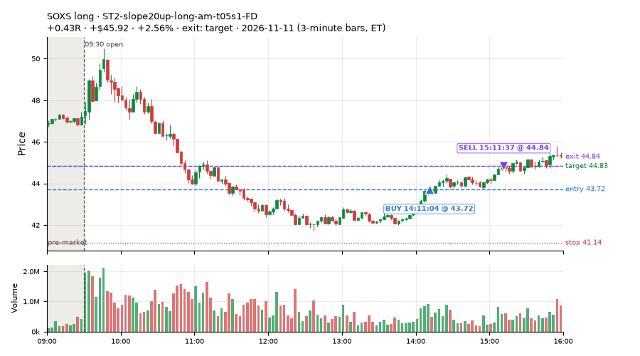
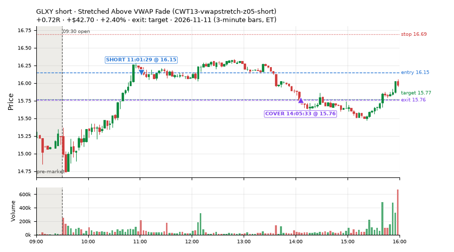
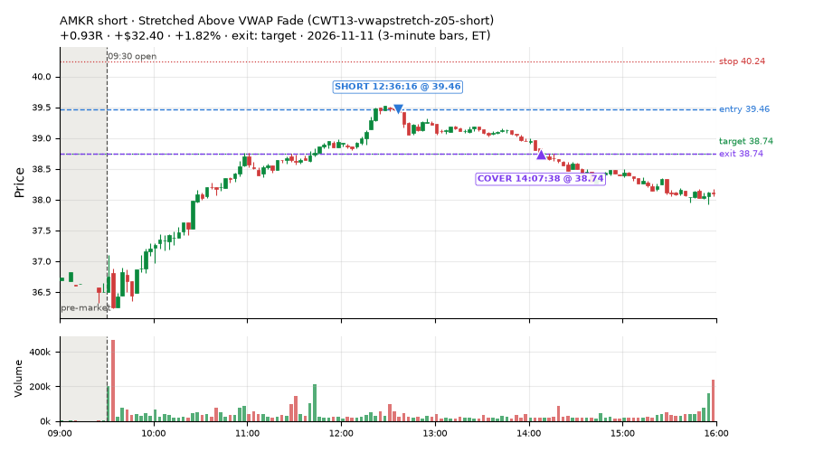
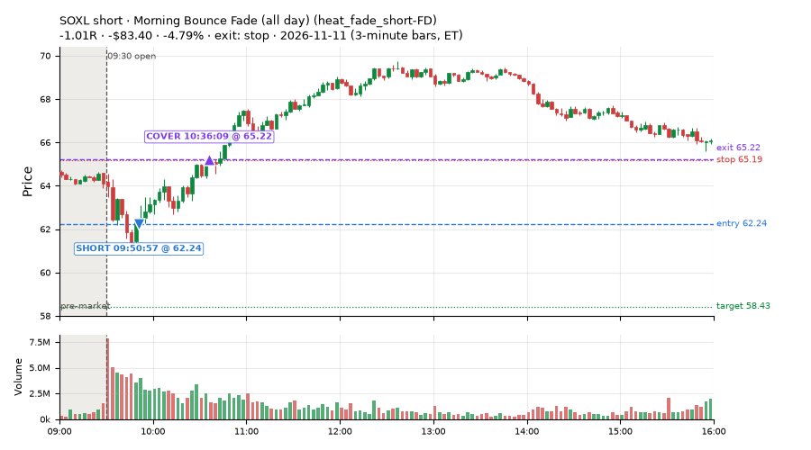
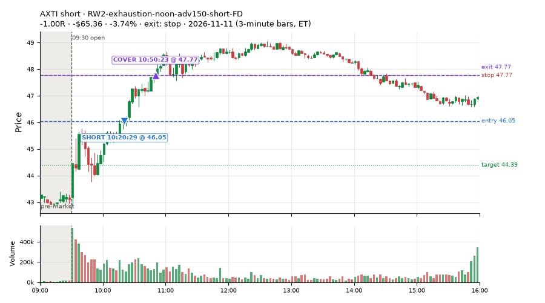
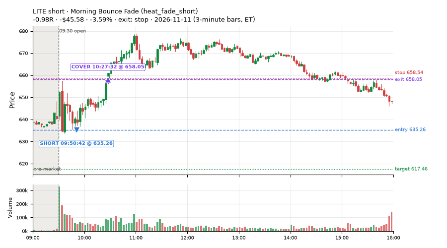
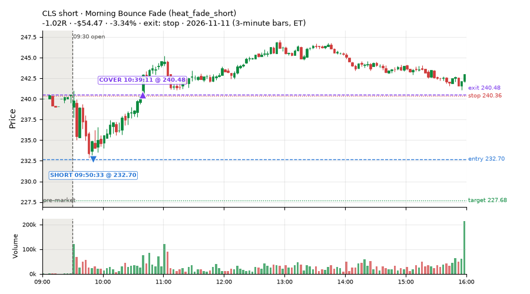
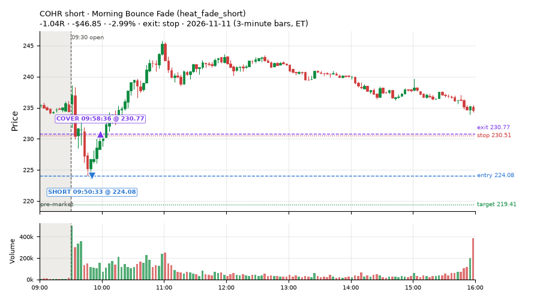

394 trades · win rate 49% · P/L $-2,073.36
PROBATION: no live setup has passed both locked test periods. 10 owner-directed setups added 2026-10-08 (MarcoFlow top 5 + 5 new), untested live. RW6G1 (RW6 + VWAP band guard) added 2026-10-09, probation.

| Symbol | Setup | Side | In | Out | Entry | Exit | Exit reason | % gained | P/L |
|---|---|---|---|---|---|---|---|---|---|
| SOXS | ST2-slope20up-long-am-t05s1-FD | long | 14:11 | 15:11 | 43.72 | 44.84 | target | +2.56% | $45.92 |
| GLXY | Stretched Above VWAP Fade (CWT13-vwapstretch-z05-short) | short | 11:01 | 14:05 | 16.15 | 15.76 | target | +2.40% | $42.70 |
| AMKR | Stretched Above VWAP Fade (CWT13-vwapstretch-z05-short) | short | 12:36 | 14:07 | 39.46 | 38.74 | target | +1.82% | $32.40 |
| Symbol | Setup | Side | In | Out | Entry | Exit | Exit reason | % lost | P/L |
|---|---|---|---|---|---|---|---|---|---|
| SOXL | heat_fade_short-FD | short | 09:50 | 10:36 | 62.24 | 65.22 | stop | -4.79% | $-83.40 |
| AXTI | RW2-exhaustion-noon-adv150-short-FD | short | 10:20 | 10:50 | 46.05 | 47.77 | stop | -3.74% | $-65.36 |
| LITE | heat_fade_short | short | 09:50 | 10:27 | 635.26 | 658.05 | stop | -3.59% | $-45.58 |
| CLS | heat_fade_short | short | 09:50 | 10:39 | 232.70 | 240.48 | stop | -3.34% | $-54.47 |
| COHR | heat_fade_short | short | 09:50 | 09:58 | 224.08 | 230.77 | stop | -2.99% | $-46.85 |








Signal to fill: median 2s, 90th percentile 5s (394 trades). Bars close each minute; the order follows the bar close.
Best excursion (MFE): median 0.36R; worst (MAE) median 0.77R. 36% of trades never got +0.25R in our favour; 5 reached +1R and still closed at or below 0.
| Symbol | Setup | Best R | Worst R | Closed R |
|---|---|---|---|---|
| IJR | MF1-945-flowsell-vwapup-FD | +1.82 | -1.06 | -1.06 |
| VB | heat_fade_short-FD | +1.63 | -1.04 | -1.04 |
| AVLV | MF1-945-flowsell-vwapup-FD | +1.41 | -1.08 | -1.08 |
| MDLN | CWT12-coil-k6-long | +0.96 | -1.17 | -1.27 |
| IWM | heat_fade_short | +0.94 | -1.06 | -1.01 |
| Entry time | Trades | Win | Avg R | P/L |
|---|---|---|---|---|
| 09:50-10:30 | 203 | 34% | -0.50 | $-2,137.49 |
| 10:30-11:30 | 126 | 66% | +0.09 | $125.74 |
| 11:30-13:00 | 27 | 78% | +0.17 | $84.88 |
| 13:00-14:00 | 10 | 60% | -0.10 | $-42.67 |
| 14:00-16:00 | 28 | 46% | -0.20 | $-103.82 |
| Setup | Trades | Win | Avg R | Adj R (net of SPY) | Avg R ex-market (all sessions) | P/L |
|---|---|---|---|---|---|---|
| Gap-Down Bounce Rejection Short (5% gap) (CWT09-gapdn-bounce-g5-lowerhalf-short) | 1.0 | 0% | -1.02 | -0.63 | -0.12 (beta -1.01, n 107) | $-26.13 |
| Coil Under the High (4 bars) (CWT12-coil-k4-long) | 29.0 | 69% | +0.03 | -0.42 | -0.00 (beta +0.66, n 354) | $-20.83 |
| Coil Under the High (6 bars) (CWT12-coil-k6-long) | 23.0 | 57% | +0.45 | -0.26 | -0.01 (beta +1.49, n 147) | $68.33 |
| Stretched Above VWAP Fade (CWT13-vwapstretch-z05-short) | 9.0 | 56% | +0.06 | -0.02 | -0.00 (beta -0.52, n 134) | $75.73 |
| Failed Opening-Range-Low Break Long (0.05 ATR) [fill] (CWT14-failbrk-orl-p05-long) | 55.0 | 82% | +0.20 | -0.09 | -0.06 (beta +0.71, n 745) | $180.23 |
| Failed Opening-Range-Low Break Long (0.05 ATR, low volume) [fill] (CWT14-failbrk-orl-p05-lowvol-long) | 40.0 | 88% | +0.27 | -0.04 | -0.02 (beta +0.66, n 621) | $197.53 |
| Failed Opening-Range-Low Break Long (0.1 ATR) [fill] (CWT14-failbrk-orl-p10-long) | 10.0 | 80% | +0.20 | -0.34 | -0.07 (beta +0.91, n 405) | $37.82 |
| Failed Opening-Range-Low Break Long (low volume) (CWT14-failbrk-orl-p10-lowvol-long) | 4.0 | 75% | +0.05 | -0.38 | -0.02 (beta +0.95, n 436) | $1.21 |
| Failed Prior-Day-High Break Short (0.05 ATR, low volume) [fill] (CWT14-failbrk-pdh-p05-lowvol-short) | 27.0 | 44% | -0.40 | -0.10 | -0.11 (beta -1.05, n 307) | $-216.54 |
| Failed Prior-Day-High Break Short (low volume) (CWT14-failbrk-pdh-p10-lowvol-short) | 15.0 | 40% | -0.45 | -0.14 | -0.17 (beta -1.21, n 160) | $-132.71 |
| Failed Prior-Day-High Break Short (0.1 ATR) [fill] (CWT14-failbrk-pdh-p10-short) | 23.0 | 35% | -0.52 | -0.12 | -0.17 (beta -1.25, n 275) | $-205.40 |
| Failed Prior-Day-Low Break Long (shallow) (CWT14-failbrk-pdl-p05-long) | 17.0 | 29% | -0.50 | -0.71 | -0.05 (beta +0.48, n 260) | $-144.57 |
| Failed Prior-Day-Low Break Long (0.05 ATR, low volume) [fill] (CWT14-failbrk-pdl-p05-lowvol-long) | 6.0 | 33% | -0.62 | -0.76 | -0.07 (beta +0.99, n 216) | $-75.52 |
| Opening-Range Low Sweep Reversal (LIQ-orl-sweep-open15-s25-long) | 2.0 | 50% | -0.16 | -0.43 | -0.05 (beta +0.10, n 163) | $0.02 |
| MF1-945-flowsell-vwapup-FD | 8.0 | 12% | -0.82 | +0.40 | -0.14 (beta -2.28, n 82) | $-27.89 |
| Early Sellers into a Pop (all day) (MF3-open-flowsell-rsi5hi-FD) | 15.0 | 33% | -0.56 | +0.15 | -0.07 (beta -1.41, n 108) | $-43.38 |
| MF5-flowsell-vwapup-rsi5hi-FD | 14.0 | 36% | -0.50 | +0.07 | +0.04 (beta -1.70, n 64) | $-64.08 |
| NS2-sma50break-overbought-short-FD | 1.0 | 100% | +0.06 | -0.11 | -0.13 (beta -0.88, n 125) | $1.06 |
| Big Loser VWAP Reclaim Fade (all day) (NS3-failed-vwap-reclaim-short-FD) | 4.0 | 0% | -1.02 | -0.93 | -0.36 (beta -0.82, n 71) | $-161.22 |
| NS5-sma50-flush-oversold-long-FD | 8.0 | 38% | -0.33 | -0.40 | -0.13 (beta +1.36, n 26) | $-103.50 |
| RW2-exhaustion-noon-adv150-short-FD | 5.0 | 20% | -0.61 | -0.61 | -0.36 (beta -1.06, n 283) | $-126.08 |
| RW4-ns3-adv150-short-FD | 2.0 | 0% | -1.01 | -1.00 | -0.24 (beta -0.52, n 59) | $-74.43 |
| Big Gainer SMA50 Cross Fade (all day) (RW6-ns2-up3-short-FD) | 1.0 | 100% | +0.06 | -0.11 | -0.02 (beta -1.66, n 68) | $1.06 |
| RW6G1-ns2-up3-vwap2sd-short-FD | 1.0 | 100% | +0.06 | -0.11 | +0.09 (beta -0.49, n 27) | $1.06 |
| ST2-slope20up-long-am-t05s1-FD | 4.0 | 100% | +0.34 | +0.34 | -0.00 (beta +0.88, n 194) | $78.12 |
| ST4-emadn-long-am-t1s05-FD | 1.0 | 100% | +0.48 | +0.57 | +0.68 (beta +2.44, n 22) | $6.56 |
| heat_fade_long-FD | 16.0 | 25% | -0.28 | -0.29 | -0.21 (beta +1.25, n 110) | $-109.90 |
| Morning Bounce Fade (heat_fade_short) failed Apr-Jun holdout: -0.015R/trade over 1420 trades | 26.0 | 8% | -0.91 | -0.70 | -0.21 (beta -1.06, n 213) | $-601.21 |
| Morning Bounce Fade (all day) (heat_fade_short-FD) | 27.0 | 4% | -0.91 | -0.59 | -0.23 (beta -1.51, n 370) | $-588.69 |
Market direction (SPY, beta 1) accounted for $95.11 of today's $-2,073.36; the rest ($-2,168.47) came from the setups themselves. Avg R net of SPY: -0.25 (incl. a hedge leg's cost; report only).
33 setups live today. Today: 1680 signals, 394 taken, 42 lost because another setup held the symbol (2%). Since 2026-10-21 (16 sessions): 18699 signals, 6373 taken, 894 lost to other setups (5%). Peak open positions today 176 of 200 slots. Earnings blackout removed 928 symbols before scanning.
Simulated playing time (not live): 12281 what-if trades of signals not taken, avg -0.02R, 56% winners; of them 893 lost to another setup (avg -0.08R).
Crowded out: NS2-sma50break-overbought-short · Starved: MF1-945-flowsell-vwapup-FD, heat_fade_long, heat_fade_long-FD, heat_fade_short-FD
| Prio | Setup | Today sig / taken | Sessions | Signals / taken / trades | Taken/day | Expected/day | Lost to other setups | Lost to (setup n) | Top skip reasons | SIMULATED: not-taken n / avg R / win | Verdict |
|---|---|---|---|---|---|---|---|---|---|---|---|
| 1 | ST1-ordn-long-pm-t05s1-FD ST1-ordn-long-pm-t05s1-FD | 0 / 0 | 16 | 46 / 34 / 34 | 2.12 | 3.49 | 0 | – | spread / quote / size 10, broker rejected 1, other 1 | 12 / -0.35R / 33% | slow 10.6 entries/week; ~6 weeks to 60 trades |
| 2 | Big Gainer SMA50 Cross Fade (all day) RW6-ns2-up3-short-FD | 1 / 1 | 16 | 167 / 68 / 68 | 4.25 | 7.12 | 9 | CWT12-coil-k4-long 4, RW6-ns2-up3-short-FD 3, NS2-sma50break-overbought-short-FD 3 | not shortable / shorts off 50, per-setup cap 18, daily loss cap 12 | 99 / +0.28R / 69% | ok 21.2 entries/week |
| 3 | NS2-sma50break-overbought-short-FD NS2-sma50break-overbought-short-FD | 1 / 1 | 16 | 300 / 125 / 125 | 7.81 | 17.08 | 11 | CWT12-coil-k4-long 8, CWT12-coil-k6-long 3, LIQ-orl-sweep-open15-s25-long 1 | not shortable / shorts off 46, per-setup cap 42, daily loss cap 39 | 175 / +0.22R / 67% | ok 39.1 entries/week |
| 4 | Big Gainer Average Reclaim Fade NS2-sma50break-overbought-short | 0 / 0 | 16 | 108 / 8 / 8 | 0.50 | 5.74 | 59 | NS2-sma50break-overbought-short-FD 49, RW6-ns2-up3-short-FD 12, CWT12-coil-k4-long 7 | symbol held by another setup 59, spread / quote / size 17, not shortable / shorts off 15 | 100 / +0.14R / 62% | crowded-out 59 of 108 signals (55%) lost to setups already holding the symbol |
| 5 | MF1-945-flowsell-vwapup-FD MF1-945-flowsell-vwapup-FD | 49 / 8 | 16 | 291 / 82 / 82 | 5.12 | 23.94 | 3 | CWT12-coil-k6-long 1, CWT14-failbrk-orl-p05-long 1, CWT12-coil-k4-long 1 | daily loss cap 124, spread / quote / size 55, broker rejected 15 | 209 / -0.29R / 28% | starved 5.12 entries/day vs ~23.94 expected |
| 6 | ST2-slope20up-long-am-t05s1-FD ST2-slope20up-long-am-t05s1-FD | 5 / 4 | 16 | 522 / 194 / 194 | 12.12 | 24.03 | 25 | heat_fade_short-FD 10, CWT09-gapdn-bounce-g5-lowerhalf-short 6, NS3-failed-vwap-reclaim-short-FD 3 | daily loss cap 219, spread / quote / size 42, per-setup cap 37 | 325 / -0.05R / 61% | ok 60.6 entries/week |
| 7 | Midday Gap-Up Dip Buy heat_fade_long | 0 / 0 | 16 | 163 / 98 / 98 | 6.12 | 30.36 | 17 | heat_fade_long-FD 9, NS3-failed-vwap-reclaim-short-FD 3, RW4-ns3-adv150-short-FD 3 | spread / quote / size 22, symbol held by another setup 17, daily loss cap 15 | 65 / -0.23R / 43% | starved 6.12 entries/day vs ~30.36 expected |
| 8 | Opening-Range Low Sweep Reversal LIQ-orl-sweep-open15-s25-long | 8 / 2 | 16 | 323 / 163 / 163 | 10.19 | – | 16 | CWT14-failbrk-orl-p10-long 13, CWT14-failbrk-orl-p05-lowvol-long 13, CWT14-failbrk-orl-p10-lowvol-long 11 | per-setup cap 57, daily loss cap 45, spread / quote / size 27 | 160 / -0.01R / 46% | ok 50.9 entries/week |
| 9 | RW2-exhaustion-noon-adv150-short-FD RW2-exhaustion-noon-adv150-short-FD | 92 / 5 | 16 | 861 / 283 / 283 | 17.69 | 50.34 | 14 | CWT12-coil-k4-long 5, CWT12-coil-k6-long 3, NS3-failed-vwap-reclaim-short-FD 3 | daily loss cap 368, not shortable / shorts off 83, spread / quote / size 70 | 578 / -0.04R / 52% | ok 88.4 entries/week |
| 10 | heat_fade_long-FD heat_fade_long-FD | 21 / 16 | 16 | 331 / 110 / 110 | 6.88 | 51.74 | 49 | heat_fade_long 42, heat_fade_short-FD 3, heat_fade_short 3 | daily loss cap 120, spread / quote / size 52, symbol held by another setup 49 | 221 / -0.14R / 45% | starved 6.88 entries/day vs ~51.74 expected |
| 11 | Failed Opening-Range-Low Break Long (low volume) CWT14-failbrk-orl-p10-lowvol-long | 17 / 4 | 16 | 794 / 436 / 436 | 27.25 | – | 8 | CWT14-failbrk-pdh-p05-lowvol-short 4, CWT14-failbrk-orl-p05-long 3, CWT14-failbrk-pdh-p10-short 2 | daily loss cap 145, spread / quote / size 143, per-setup cap 33 | 354 / +0.17R / 60% | ok 136.2 entries/week |
| 12 | Failed Opening-Range-Low Break Long (0.1 ATR) [fill] CWT14-failbrk-orl-p10-long | 32 / 10 | 16 | 939 / 405 / 405 | 25.31 | – | 14 | CWT14-failbrk-orl-p05-lowvol-long 10, CWT14-failbrk-orl-p05-long 10, CWT14-failbrk-orl-p10-lowvol-long 9 | daily loss cap 273, spread / quote / size 144, per-setup cap 53 | 529 / +0.07R / 61% | ok 126.6 entries/week |
| 13 | Morning Bounce Fade heat_fade_short | 159 / 26 | 16 | 523 / 213 / 213 | 13.31 | 31.76 | 1 | CWT14-failbrk-pdl-p05-lowvol-long 1 | spread / quote / size 121, per-setup cap 110, daily loss cap 59 | 310 / -0.26R / 37% | ok 66.6 entries/week |
| 14 | Failed Opening-Range-Low Break Long (0.05 ATR, low volume) [fill] CWT14-failbrk-orl-p05-lowvol-long | 110 / 40 | 16 | 1798 / 621 / 621 | 38.81 | – | 27 | CWT14-failbrk-orl-p10-lowvol-long 9, CWT14-failbrk-orl-p10-long 8, CWT14-failbrk-orl-p05-long 7 | daily loss cap 644, spread / quote / size 218, per-setup cap 198 | 1172 / -0.00R / 62% | ok 194.1 entries/week |
| 15 | Morning Bounce Fade (all day) heat_fade_short-FD | 222 / 27 | 16 | 1213 / 370 / 370 | 23.12 | 173.78 | 266 | heat_fade_short 213, LIQ-orl-sweep-open15-s25-long 15, CWT14-failbrk-orl-p05-long 9 | symbol held by another setup 266, daily loss cap 247, spread / quote / size 180 | 843 / -0.13R / 45% | starved 23.12 entries/day vs ~173.78 expected |
| 16 | Failed Opening-Range-Low Break Long (0.05 ATR) [fill] CWT14-failbrk-orl-p05-long | 150 / 55 | 16 | 2467 / 745 / 745 | 46.56 | – | 152 | CWT14-failbrk-orl-p10-lowvol-long 121, CWT14-failbrk-orl-p10-long 120, CWT14-failbrk-orl-p05-lowvol-long 118 | daily loss cap 832, per-setup cap 325, spread / quote / size 302 | 1717 / -0.04R / 61% | ok 232.8 entries/week |
| 17 | Gap-Down Bounce Rejection Short (5% gap) CWT09-gapdn-bounce-g5-lowerhalf-short | 9 / 1 | 16 | 643 / 107 / 107 | 6.69 | – | 4 | CWT12-coil-k4-long 3, CWT12-coil-k6-long 1, CWT14-failbrk-orl-p05-long 1 | not shortable / shorts off 414, spread / quote / size 58, per-setup cap 32 | 534 / +0.20R / 58% | ok 33.4 entries/week |
| 18 | Failed Prior-Day-High Break Short (0.05 ATR, low volume) [fill] CWT14-failbrk-pdh-p05-lowvol-short | 76 / 27 | 15 | 863 / 307 / 307 | 20.47 | – | 10 | CWT14-failbrk-orl-p10-long 4, CWT14-failbrk-orl-p10-lowvol-long 3, CWT14-failbrk-orl-p05-long 3 | daily loss cap 298, spread / quote / size 190, not shortable / shorts off 41 | 555 / -0.03R / 63% | ok 102.3 entries/week |
| 19 | Failed Prior-Day-High Break Short (low volume) CWT14-failbrk-pdh-p10-lowvol-short | 37 / 15 | 15 | 377 / 160 / 160 | 10.67 | – | 4 | CWT14-failbrk-orl-p10-long 2, CWT14-failbrk-orl-p05-long 2, CWT12-coil-k4-long 1 | spread / quote / size 106, daily loss cap 80, not shortable / shorts off 16 | 216 / -0.07R / 61% | ok 53.3 entries/week |
| 20 | Failed Prior-Day-High Break Short (0.1 ATR) [fill] CWT14-failbrk-pdh-p10-short | 58 / 23 | 14 | 605 / 275 / 275 | 19.64 | – | 10 | CWT14-failbrk-orl-p10-long 4, CWT14-failbrk-pdh-p05-lowvol-short 3, CWT14-failbrk-pdh-p10-lowvol-short 3 | spread / quote / size 175, daily loss cap 84, not shortable / shorts off 38 | 329 / -0.10R / 59% | ok 98.2 entries/week |
| 21 | Stretched Above VWAP Fade CWT13-vwapstretch-z05-short | 10 / 9 | 14 | 321 / 134 / 134 | 9.57 | – | 3 | LIQ-orl-sweep-open15-s25-long 1, CWT12-coil-k4-long 1, CWT12-coil-k6-long 1 | daily loss cap 131, spread / quote / size 24, not shortable / shorts off 21 | 187 / -0.10R / 46% | ok 47.9 entries/week |
| 22 | Gap-Down VWAP Loss Short (5% gap) CWT09-gapdn-vwaploss-g5-short | 31 / 0 | 13 | 748 / 81 / 81 | 6.23 | – | 4 | CWT14-failbrk-orl-p05-long 2, CWT14-failbrk-orl-p05-lowvol-long 1, CWT14-failbrk-pdl-p05-long 1 | not shortable / shorts off 517, spread / quote / size 68, per-setup cap 54 | 659 / +0.03R / 44% | ok 31.2 entries/week |
| 23 | Coil Under the High (6 bars) CWT12-coil-k6-long | 96 / 23 | 12 | 529 / 147 / 147 | 12.25 | – | 24 | CWT14-failbrk-pdh-p10-short 6, heat_fade_short 6, RW2-exhaustion-noon-adv150-short-FD 4 | daily loss cap 186, spread / quote / size 117, broker rejected 54 | 382 / +0.17R / 47% | ok 61.2 entries/week |
| 24 | Coil Under the High (4 bars) CWT12-coil-k4-long | 232 / 29 | 10 | 1143 / 354 / 354 | 35.40 | – | 44 | RW2-exhaustion-noon-adv150-short-FD 14, CWT14-failbrk-pdh-p05-lowvol-short 9, CWT14-failbrk-pdh-p10-short 8 | per-setup cap 493, broker rejected 154, spread / quote / size 97 | 788 / +0.02R / 70% | ok 177.0 entries/week |
| 25 | Failed Prior-Day-Low Break Long (shallow) CWT14-failbrk-pdl-p05-long | 72 / 17 | 9 | 864 / 260 / 260 | 28.89 | – | 6 | CWT14-failbrk-orl-p10-lowvol-long 3, CWT14-failbrk-orl-p10-long 3, CWT14-failbrk-orl-p05-lowvol-long 3 | daily loss cap 446, spread / quote / size 135, broker rejected 13 | 599 / -0.05R / 62% | ok 144.4 entries/week |
| 26 | Failed Prior-Day-Low Break Long (0.05 ATR, low volume) [fill] CWT14-failbrk-pdl-p05-lowvol-long | 41 / 6 | 9 | 596 / 216 / 216 | 24.00 | – | 20 | CWT14-failbrk-orl-p05-lowvol-long 16, CWT14-failbrk-orl-p05-long 13, CWT14-failbrk-pdl-p05-long 10 | daily loss cap 216, spread / quote / size 119, broker rejected 25 | 376 / -0.04R / 63% | ok 120.0 entries/week |
| 27 | Big Loser VWAP Reclaim Fade (all day) NS3-failed-vwap-reclaim-short-FD | 27 / 4 | 8 | 391 / 71 / 71 | 8.88 | 22.02 | 34 | NS3-failed-vwap-reclaim-short-FD 10, RW4-ns3-adv150-short-FD 9, CWT14-failbrk-orl-p10-lowvol-long 9 | daily loss cap 180, not shortable / shorts off 62, symbol held by another setup 34 | 320 / -0.11R / 46% | ok 44.4 entries/week |
| 28 | RW4-ns3-adv150-short-FD RW4-ns3-adv150-short-FD | 22 / 2 | 8 | 287 / 59 / 59 | 7.38 | 17.34 | 48 | NS3-failed-vwap-reclaim-short-FD 25, RW4-ns3-adv150-short-FD 23, heat_fade_long 10 | daily loss cap 106, symbol held by another setup 48, spread / quote / size 33 | 228 / -0.16R / 42% | ok 36.9 entries/week |
| 29 | Early Sellers into a Pop (all day) MF3-open-flowsell-rsi5hi-FD | 48 / 15 | 7 | 212 / 108 / 108 | 15.43 | 24.16 | 3 | ST2-slope20up-long-am-t05s1-FD 1, heat_fade_long 1, CWT14-failbrk-orl-p05-long 1 | daily loss cap 43, broker rejected 27, not shortable / shorts off 18 | 104 / -0.10R / 44% | ok 77.1 entries/week |
| 30 | MF5-flowsell-vwapup-rsi5hi-FD MF5-flowsell-vwapup-rsi5hi-FD | 42 / 14 | 7 | 135 / 64 / 64 | 9.14 | 15.47 | 1 | heat_fade_short 1, MF1-945-flowsell-vwapup-FD 1, MF3-open-flowsell-rsi5hi-FD 1 | broker rejected 33, daily loss cap 29, spread / quote / size 8 | 71 / -0.23R / 39% | ok 45.7 entries/week |
| 31 | NS5-sma50-flush-oversold-long-FD NS5-sma50-flush-oversold-long-FD | 10 / 8 | 6 | 55 / 26 / 26 | 4.33 | 6.32 | 4 | NS3-failed-vwap-reclaim-short-FD 2, RW4-ns3-adv150-short-FD 2, ST4-emadn-long-am-t1s05-FD 1 | daily loss cap 14, broker rejected 6, spread / quote / size 5 | 29 / +0.18R / 62% | ok 21.7 entries/week |
| 32 | ST4-emadn-long-am-t1s05-FD ST4-emadn-long-am-t1s05-FD | 1 / 1 | 6 | 30 / 22 / 22 | 3.67 | 2.77 | 1 | heat_fade_short-FD 1 | spread / quote / size 6, symbol held by another setup 1, broker rejected 1 | 8 / +0.38R / 50% | ok 18.3 entries/week |
| 33 | RW6G1-ns2-up3-vwap2sd-short-FD RW6G1-ns2-up3-vwap2sd-short-FD | 1 / 1 | 6 | 54 / 27 / 27 | 4.50 | 3.73 | 3 | RW6-ns2-up3-short-FD 3, NS2-sma50break-overbought-short-FD 2, RW6G1-ns2-up3-vwap2sd-short-FD 2 | not shortable / shorts off 18, broker rejected 4, symbol held by another setup 3 | 27 / +0.08R / 52% | ok 22.5 entries/week |
Every trade is attached as a CSV you can open and edit in Excel or Google Sheets. Live page: https://misiti15.github.io/MCF/live/